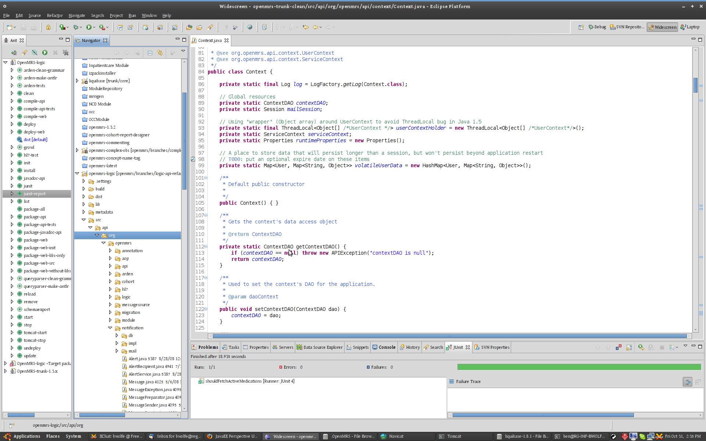
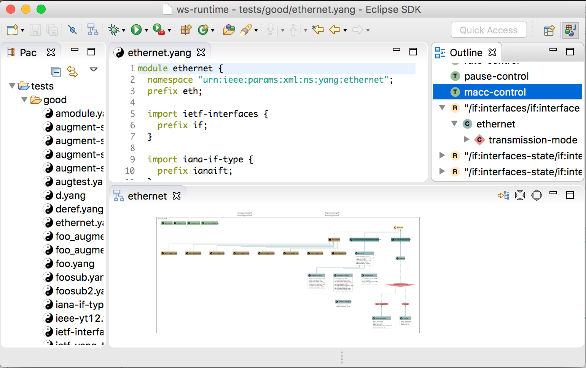
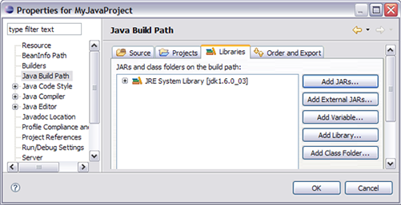
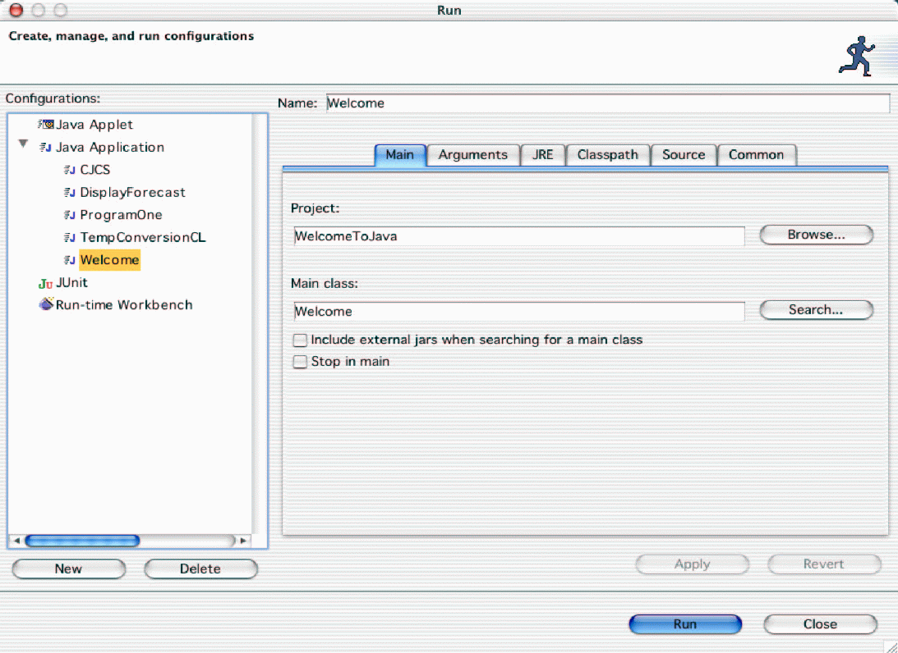

What's Eclipse ?
Slogan : The Platform for Open Innovation and Collaboration
Eclipse est un projet, décliné et organisé en un ensemble de sous-projets de développements logiciels, de la fondation Eclipse visant à développer un environnement de production de logiciels libre qui soit extensible, universel et polyvalent, en s'appuyant principalement sur Java.
Son objectif est de produire et fournir des outils pour la réalisation de logiciels, englobant les activités de programmation (notamment environnement de développement intégré et frameworks) mais aussi d'AGL recouvrant modélisation, conception, test, gestion de configuration, reporting… Son EDI, partie intégrante du projet, vise notamment à supporter tout langage de programmation à l'instar de Microsoft Visual Studio.
Bien qu'Eclipse ait d'abord été conçu uniquement pour produire des environnements de développement, les utilisateurs et contributeurs se sont rapidement mis à réutiliser ses briques logicielles pour des applications clientes classiques. Cela a conduit à une extension du périmètre initial d'Eclipse à toute production de logiciel : c'est l'apparition du framework Eclipse RCP en 2004.
Figurant parmi les grandes réussites de l'open source, Eclipse est devenu un standard du marché des logiciels de développement, intégré par de grands éditeurs logiciels et sociétés de services. Les logiciels commerciaux Lotus Notes 8, IBM Lotus Symphony ou WebSphere Studio Application Developer sont notamment basés sur Eclipse.
Screen Shots
  
Social Links


Download Links